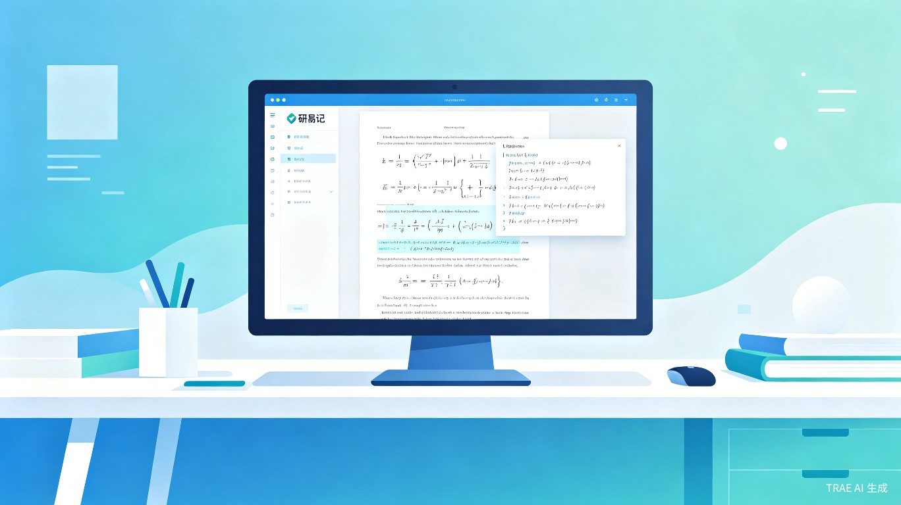

研易记是一款面向科研人群的智能公式提取与复刻工具，支持桌面端截屏识别与网页端交互式框选，将 PDF 论文中的复杂数学公式一键转化为可编辑的 LaTeX 代码，极致压缩论文撰写中的机械排版时间。
核心定位：不是简单的 OCR 工具，而是深度学习时代的"公式理解引擎"——不仅识别符号，更理解公式的语义结构与上下文关系。
全局快捷键唤起截屏，框选论文中的公式区域，后台大模型实时解析并返回 LaTeX 代码，自动写入剪贴板。
上传 PDF 或直接粘贴论文 URL，在网页中高亮框选目标公式，支持批量提取与在线编辑预览。
提取结果自动归档至个人公式库，支持按论文、主题、标签分类检索，构建专属的公式知识图谱。
研易记精准服务三类核心科研人群，覆盖从学术阅读到论文撰写的完整工作流。
| 用户类型 | 典型场景 | 核心需求 |
|---|---|---|
| 硕博研究生 | 撰写学位论文、整理开题/中期报告中的算法推导 | 快速复现 Paper 中的公式，减少手动输入错误 |
| 高校教师 | 备课编写课件、指导学生论文、撰写基金申请书 | 高效整理教学材料中的数学内容 |
| 算法研究员 | 复现前沿 SOTA 模型、撰写技术报告与专利文档 | 精确解析深度学习论文中的复杂多行公式 |
研易记采用"端侧轻量 + 云端大模型"的混合架构，兼顾响应速度与识别精度。
flowchart TB
subgraph 用户端["用户交互层"]
A1["桌面截屏模块"] --> B["公式区域检测"]
A2["网页上传模块"] --> B
A3["URL 解析模块"] --> B
end
subgraph 智能层["智能处理层"]
B --> C["图像预处理
去噪/二值化/版面分析"]
C --> D["大模型公式识别
多模态 VLM 推理"]
D --> E["LaTeX 后处理
语法校验/结构优化"]
end
subgraph 输出层["输出与管理层"]
E --> F["LaTeX 代码输出"]
E --> G["公式笔记归档"]
E --> H["公式知识图谱"]
end
F --> I["一键复制 / 导出"]
G --> J["按论文/主题/标签检索"]
H --> K["语义关联推荐"]
基于视觉语言模型（VLM）进行端到端公式识别，相比传统 OCR + 序列模型方案，对复杂嵌套结构的理解能力显著提升。
桌面端采用轻量级目标检测模型实时定位公式区域，毫秒级响应，用户框选即刻触发识别流程。
内置 LaTeX 语法校验引擎，自动修复常见格式问题，优化公式结构，确保输出代码可直接编译。
通过对比传统手动输入与研易记辅助输入的效率差异，直观展示产品价值。
简单公式从 120 秒缩短至 12 秒
复杂多行公式首次识别正确率
用户报告阅读专注度显著提升
从框选到 LaTeX 输出的端到端耗时
研易记在识别精度、交互体验和知识管理三个维度上均具备显著差异化优势。
| 对比维度 | 传统 OCR（Mathpix 等） | 通用 AI 助手（ChatGPT 等） | 研易记 |
|---|---|---|---|
| 复杂公式识别率 | 中等，多行公式易出错 | 依赖图片质量，不稳定 | 高，专为学术公式优化 |
| 交互方式 | 上传图片，等待结果 | 对话框式，需描述需求 | 截屏框选 / 网页交互，零等待 |
| 公式管理 | 无 | 无 | 内置公式库 + 知识图谱 |
| LaTeX 后处理 | 基础校验 | 无保障 | 智能校验 + 结构优化 |
| 批量处理 | 有限支持 | 逐个处理 | 整页/整篇论文批量提取 |
| 学术场景适配 | 通用场景 | 通用场景 | 深度学习/数学/物理专用优化 |
以"复现一篇 Transformer 论文中的注意力机制公式"为例，展示研易记的完整工作流。
flowchart LR
S1["打开 PDF 论文"] --> S2["快捷键唤起截屏"]
S2 --> S3["框选 Attention 公式区域"]
S3 --> S4["大模型实时识别"]
S4 --> S5["LaTeX 代码预览"]
S5 --> S6{校验通过？}
S6 -- 是 --> S7["一键复制到编辑器"]
S6 -- 否 --> S8["在线编辑修正"]
S8 --> S7
S7 --> S9["自动归档至公式库"]
以 Transformer 论文中的多头注意力公式为例：
\text{MultiHead}(Q, K, V) = \text{Concat}(\text{head}_1, \dots, \text{head}_h)W^O
\text{where} \quad \text{head}_i = \text{Attention}(QW_i^Q, KW_i^K, VW_i^V)
\text{Attention}(Q, K, V) = \text{softmax}\left(\frac{QK^T}{\sqrt{d_k}}\right)V
效率对比：手动输入上述三行公式约需 8-12 分钟，研易记一键提取仅需 3 秒，且识别准确率超过 95%。
将以往需要几分钟才能敲完的一个复杂公式，缩短为一键框选秒级生成，极致压缩论文撰写的机械排版时间。以一篇包含 50 个公式的学位论文为例，传统方式需要约 8 小时的纯公式输入时间，研易记可将其压缩至 不到 30 分钟。
科研创新需要深度思考和持续专注。研易记通过消除"公式输入"这一高频打断源，让科研人员在阅读文献时保持思考的连续性，将精力集中在理解算法本质和创新思路上。
内置的公式知识库不仅是一个存储工具，更是一个个人学术知识图谱。随着使用积累，用户将拥有一座结构化的公式宝库，支持语义检索和关联推荐，大幅提升知识复用效率。
对于 LaTeX 语法不熟悉的初级研究者，研易记降低了学术写作的技术门槛，让更多人能够专注于研究内容本身而非排版技巧，促进学术成果的产出与传播。
| 阶段 | 时间 | 核心目标 | 关键交付 |
|---|---|---|---|
| MVP | 第 1-3 个月 | 验证核心公式识别能力 | 桌面端截屏识别 + LaTeX 输出 |
| V1.0 | 第 4-6 个月 | 完整产品体验上线 | 网页端 + 公式库 + 批量提取 |
| V2.0 | 第 7-12 个月 | 知识图谱与生态扩展 | 语义检索 + 插件生态 + 协作功能 |